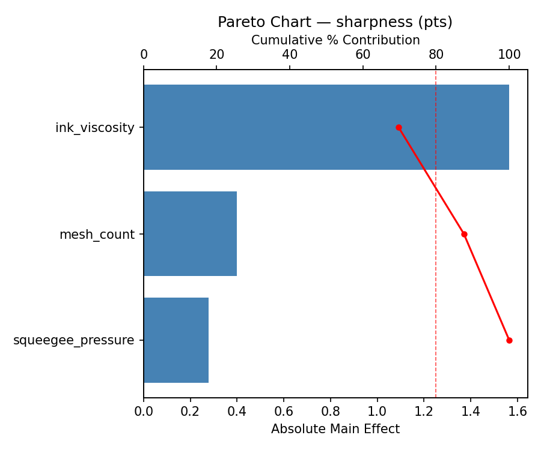
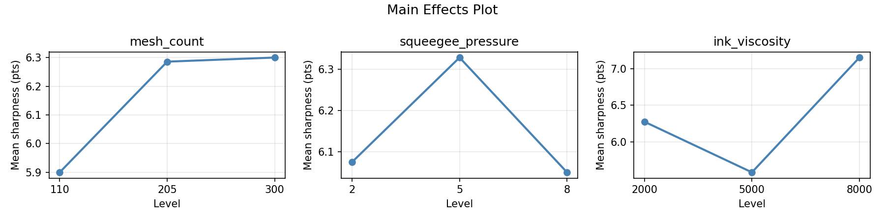
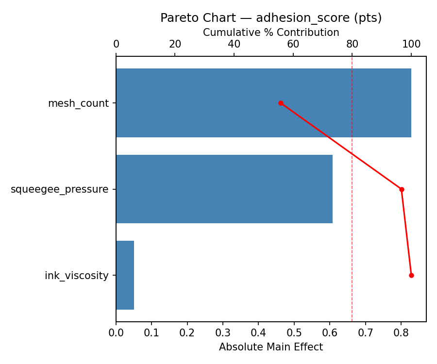
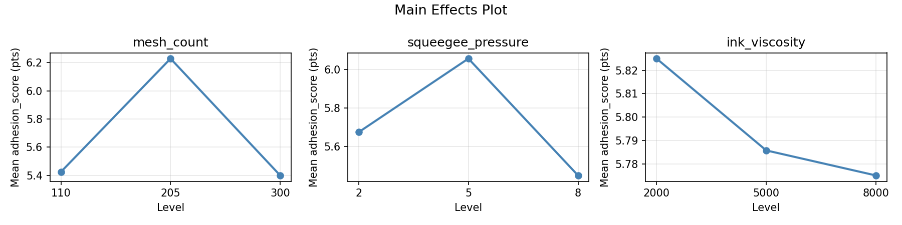
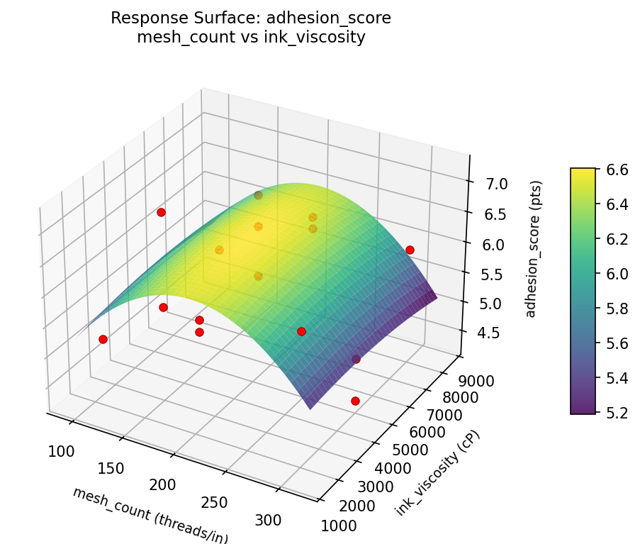
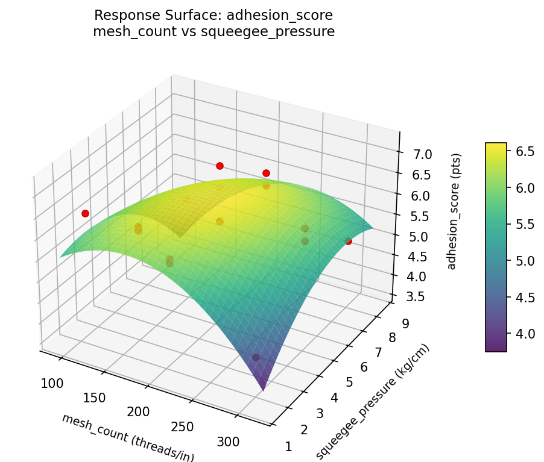
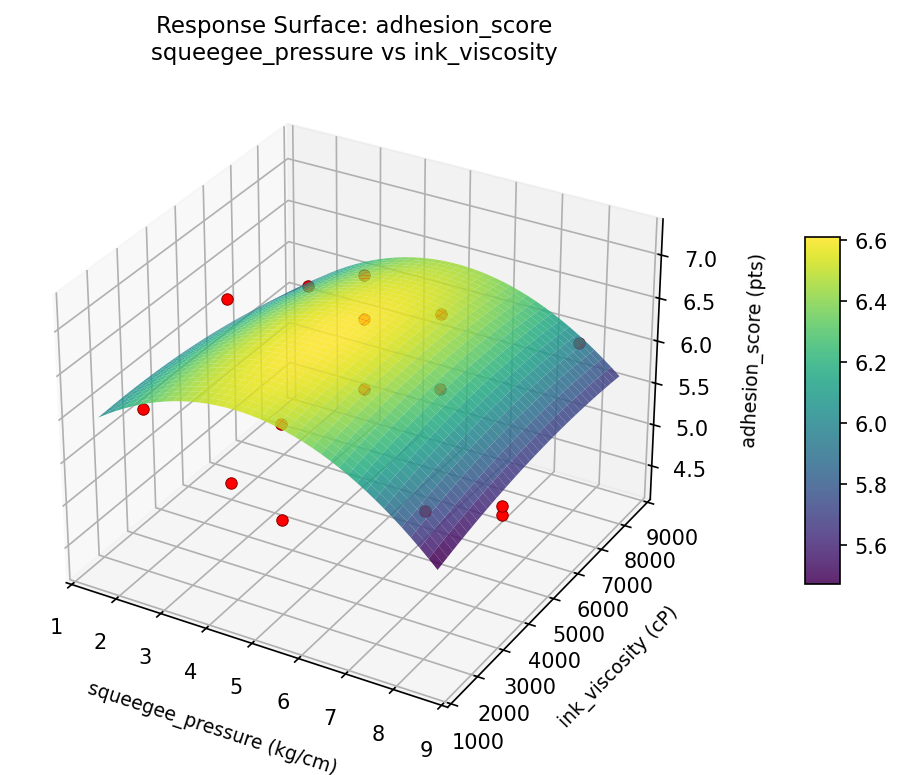
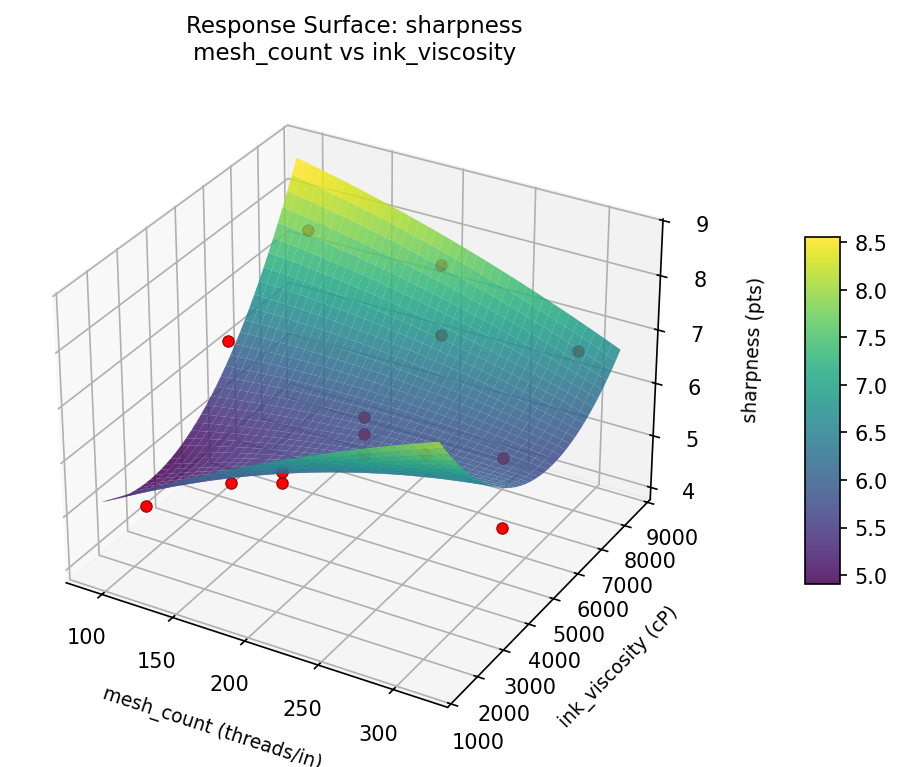
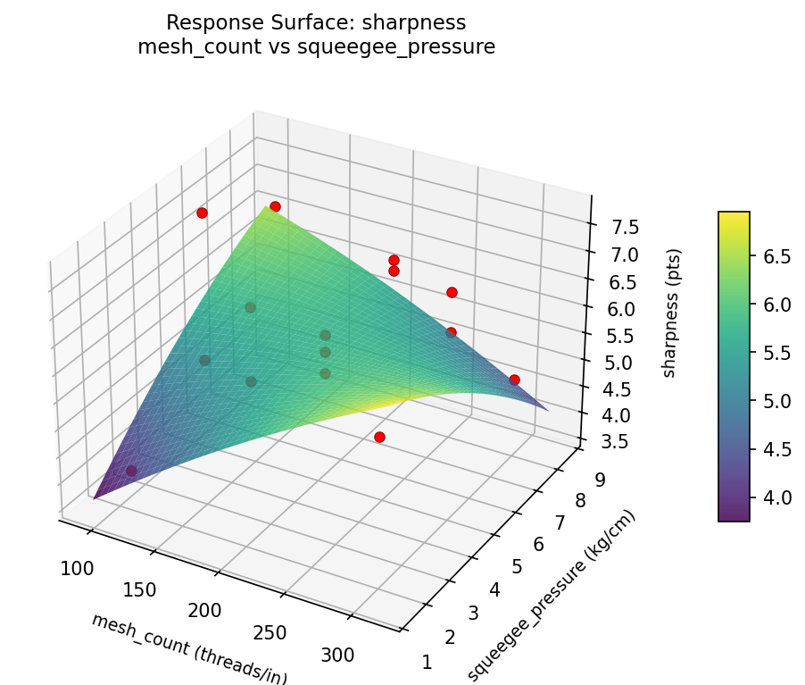
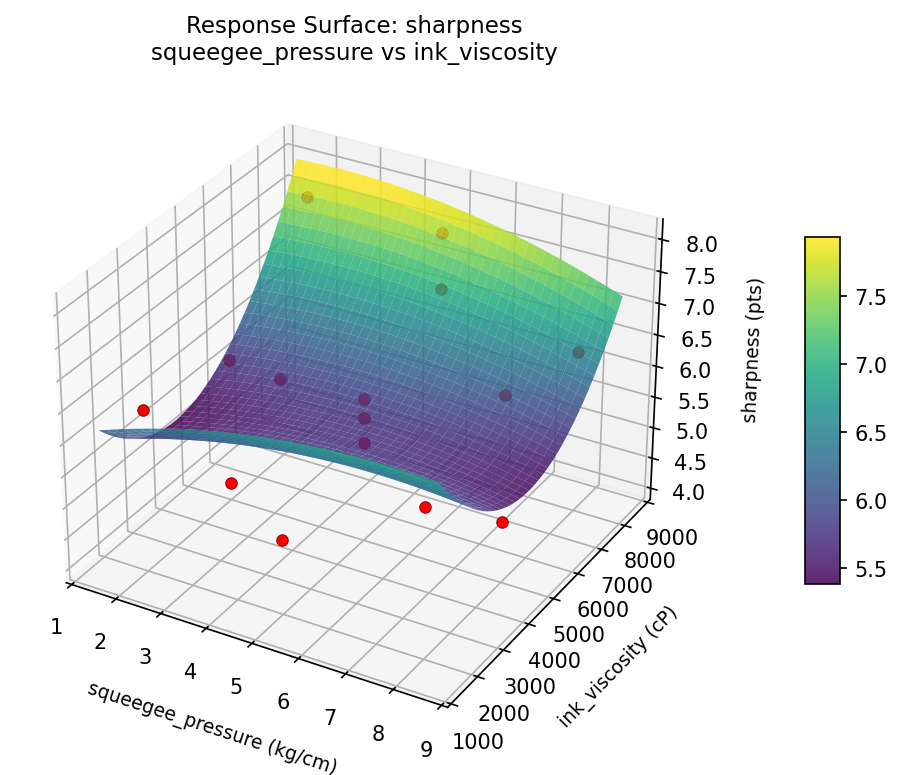

Summary
This experiment investigates screen printing quality. Box-Behnken design to maximize print sharpness and ink adhesion by tuning mesh count, squeegee pressure, and ink viscosity.
The design varies 3 factors: mesh count (threads/in), ranging from 110 to 300, squeegee pressure (kg/cm), ranging from 2 to 8, and ink viscosity (cP), ranging from 2000 to 8000. The goal is to optimize 2 responses: sharpness (pts) (maximize) and adhesion score (pts) (maximize). Fixed conditions held constant across all runs include substrate = cotton_tshirt, ink type = plastisol.
A Box-Behnken design was chosen because it efficiently fits quadratic models with 3 continuous factors while avoiding extreme corner combinations — requiring only 15 runs instead of the 8 needed for a full factorial at two levels.
Quadratic response surface models were fitted to capture potential curvature and factor interactions. The RSM contour plots below visualize how pairs of factors jointly affect each response.
Key Findings
For sharpness, the most influential factors were ink viscosity (69.7%), mesh count (17.8%), squeegee pressure (12.4%). The best observed value was 7.7 (at mesh count = 110, squeegee pressure = 2, ink viscosity = 5000).
For adhesion score, the most influential factors were mesh count (55.8%), squeegee pressure (40.9%), ink viscosity (3.4%). The best observed value was 7.2 (at mesh count = 205, squeegee pressure = 8, ink viscosity = 8000).
Recommended Next Steps
- Run confirmation experiments at the predicted optimal settings to validate the model.
- Consider whether any fixed factors should be varied in a future study.
Experimental Setup
Factors
| Factor | Low | High | Unit |
|---|
mesh_count | 110 | 300 | threads/in |
squeegee_pressure | 2 | 8 | kg/cm |
ink_viscosity | 2000 | 8000 | cP |
Fixed: substrate = cotton_tshirt, ink_type = plastisol
Responses
| Response | Direction | Unit |
|---|
sharpness | ↑ maximize | pts |
adhesion_score | ↑ maximize | pts |
Configuration
{
"metadata": {
"name": "Screen Printing Quality",
"description": "Box-Behnken design to maximize print sharpness and ink adhesion by tuning mesh count, squeegee pressure, and ink viscosity"
},
"factors": [
{
"name": "mesh_count",
"levels": [
"110",
"300"
],
"type": "continuous",
"unit": "threads/in"
},
{
"name": "squeegee_pressure",
"levels": [
"2",
"8"
],
"type": "continuous",
"unit": "kg/cm"
},
{
"name": "ink_viscosity",
"levels": [
"2000",
"8000"
],
"type": "continuous",
"unit": "cP"
}
],
"fixed_factors": {
"substrate": "cotton_tshirt",
"ink_type": "plastisol"
},
"responses": [
{
"name": "sharpness",
"optimize": "maximize",
"unit": "pts"
},
{
"name": "adhesion_score",
"optimize": "maximize",
"unit": "pts"
}
],
"settings": {
"operation": "box_behnken",
"test_script": "use_cases/183_screen_printing/sim.sh"
}
}
Experimental Matrix
The Box-Behnken Design produces 15 runs. Each row is one experiment with specific factor settings.
| Run | mesh_count | squeegee_pressure | ink_viscosity |
|---|
| 1 | 205 | 2 | 2000 |
| 2 | 205 | 5 | 5000 |
| 3 | 300 | 5 | 8000 |
| 4 | 300 | 5 | 2000 |
| 5 | 205 | 5 | 5000 |
| 6 | 205 | 5 | 5000 |
| 7 | 110 | 5 | 8000 |
| 8 | 300 | 2 | 5000 |
| 9 | 205 | 2 | 8000 |
| 10 | 300 | 8 | 5000 |
| 11 | 110 | 5 | 2000 |
| 12 | 205 | 8 | 8000 |
| 13 | 110 | 2 | 5000 |
| 14 | 110 | 8 | 5000 |
| 15 | 205 | 8 | 2000 |
Step-by-Step Workflow
1
Preview the design
$ python doe.py info --config use_cases/183_screen_printing/config.json
2
Generate the runner script
$ python doe.py generate --config use_cases/183_screen_printing/config.json \
--output use_cases/183_screen_printing/results/run.sh --seed 42
3
Execute the experiments
$ bash use_cases/183_screen_printing/results/run.sh
4
Analyze results
$ python doe.py analyze --config use_cases/183_screen_printing/config.json
5
Get optimization recommendations
$ python doe.py optimize --config use_cases/183_screen_printing/config.json
6
Generate the HTML report
$ python doe.py report --config use_cases/183_screen_printing/config.json \
--output use_cases/183_screen_printing/results/report.html
Real-World Experiment Workflow
ℹ
Physical Textile Process? Use the Manual Workflow
Textile experiments involve real fabrics, dyes, tension, and physical processes that require hands-on work and measurement. The simulation script above is for demonstration. For your real experiments, use record, status, and export-worksheet.
$ python doe.py export-worksheet --config use_cases/183_screen_printing/config.json \
--format csv --output worksheet.csv
$ python doe.py status --config use_cases/183_screen_printing/config.json
$ python doe.py record --config use_cases/183_screen_printing/config.json --run 1
$ python doe.py analyze --config use_cases/183_screen_printing/config.json --partial
$ python doe.py analyze --config use_cases/183_screen_printing/config.json
$ python doe.py optimize --config use_cases/183_screen_printing/config.json
$ python doe.py report --config use_cases/183_screen_printing/config.json \
--output report.html
✔
Works Without a Test Script
The analysis pipeline doesn't care how results were produced. Record your measurements with record, and the full analysis, optimization, and reporting pipeline works identically. Use --partial to get early insights before all runs are complete.
Features Exercised
| Feature | Value |
|---|
| Design type | box_behnken |
| Factor types | continuous (all 3) |
| Arg style | double-dash |
| Responses | 2 (sharpness ↑, adhesion_score ↑) |
| Total runs | 15 |
Analysis Results
Generated from actual experiment runs using the DOE Helper Tool.
Response: sharpness
Top factors: ink_viscosity (69.7%), mesh_count (17.8%), squeegee_pressure (12.4%).
Pareto Chart

Main Effects Plot

Response: adhesion_score
Top factors: mesh_count (55.8%), squeegee_pressure (40.9%), ink_viscosity (3.4%).
Pareto Chart

Main Effects Plot

Response Surface Plots
3D surfaces fitted with quadratic RSM. Red dots are observed data points.
adhesion score mesh count vs ink viscosity

adhesion score mesh count vs squeegee pressure

adhesion score squeegee pressure vs ink viscosity

sharpness mesh count vs ink viscosity

sharpness mesh count vs squeegee pressure

sharpness squeegee pressure vs ink viscosity

Full Analysis Output
RSM surface: rsm_sharpness_mesh_count_vs_squeegee_pressure.png
RSM surface: rsm_sharpness_mesh_count_vs_ink_viscosity.png
RSM surface: rsm_sharpness_squeegee_pressure_vs_ink_viscosity.png
RSM surface: rsm_adhesion_score_mesh_count_vs_squeegee_pressure.png
RSM surface: rsm_adhesion_score_mesh_count_vs_ink_viscosity.png
RSM surface: rsm_adhesion_score_squeegee_pressure_vs_ink_viscosity.png
=== Main Effects: sharpness ===
Factor Effect Std Error % Contribution
--------------------------------------------------------------
ink_viscosity 1.5643 0.2727 69.7%
mesh_count 0.4000 0.2727 17.8%
squeegee_pressure 0.2786 0.2727 12.4%
=== Summary Statistics: sharpness ===
mesh_count:
Level N Mean Std Min Max
------------------------------------------------------------
110 4 5.9000 1.6432 4.1000 7.7000
205 7 6.2857 0.7175 5.4000 7.7000
300 4 6.3000 1.1518 4.8000 7.5000
squeegee_pressure:
Level N Mean Std Min Max
------------------------------------------------------------
2 4 6.0750 1.4886 4.1000 7.7000
5 7 6.3286 1.0356 5.0000 7.7000
8 4 6.0500 0.8699 4.8000 6.8000
ink_viscosity:
Level N Mean Std Min Max
------------------------------------------------------------
2000 4 6.2750 1.0243 5.0000 7.5000
5000 7 5.5857 0.9045 4.1000 6.8000
8000 4 7.1500 0.6557 6.4000 7.7000
=== Main Effects: adhesion_score ===
Factor Effect Std Error % Contribution
--------------------------------------------------------------
mesh_count 0.8286 0.1982 55.8%
squeegee_pressure 0.6071 0.1982 40.9%
ink_viscosity 0.0500 0.1982 3.4%
=== Summary Statistics: adhesion_score ===
mesh_count:
Level N Mean Std Min Max
------------------------------------------------------------
110 4 5.4250 0.7274 4.9000 6.5000
205 7 6.2286 0.5219 5.8000 7.2000
300 4 5.4000 0.9201 4.3000 6.3000
squeegee_pressure:
Level N Mean Std Min Max
------------------------------------------------------------
2 4 5.6750 0.9535 4.3000 6.5000
5 7 6.0571 0.7591 5.1000 7.2000
8 4 5.4500 0.5916 4.9000 6.1000
ink_viscosity:
Level N Mean Std Min Max
------------------------------------------------------------
2000 4 5.8250 0.4646 5.2000 6.3000
5000 7 5.7857 1.0777 4.3000 7.2000
8000 4 5.7750 0.4573 5.1000 6.1000
Pareto chart (sharpness): use_cases/183_screen_printing/results/analysis/pareto_sharpness.png
Pareto chart (adhesion_score): use_cases/183_screen_printing/results/analysis/pareto_adhesion_score.png
Main effects (sharpness): use_cases/183_screen_printing/results/analysis/main_effects_sharpness.png
Main effects (adhesion_score): use_cases/183_screen_printing/results/analysis/main_effects_adhesion_score.png
Optimization Recommendations
=== Optimization: sharpness ===
Direction: maximize
Best observed run: #4
mesh_count = 110
squeegee_pressure = 2
ink_viscosity = 5000
Value: 7.7
RSM Model (linear, R² = 0.1743, Adj R² = -0.0509):
Coefficients:
intercept +6.1867
mesh_count +0.5625
squeegee_pressure +0.1500
ink_viscosity +0.0375
RSM Model (quadratic, R² = 0.6941, Adj R² = 0.1435):
Coefficients:
intercept +6.0000
mesh_count +0.5625
squeegee_pressure +0.1500
ink_viscosity +0.0375
mesh_count*squeegee_pressure +0.9750
mesh_count*ink_viscosity -0.7500
squeegee_pressure*ink_viscosity +0.1750
mesh_count^2 +0.5750
squeegee_pressure^2 +0.1500
ink_viscosity^2 -0.3750
Curvature analysis:
mesh_count coef=+0.5750 convex (has a minimum)
ink_viscosity coef=-0.3750 concave (has a maximum)
squeegee_pressure coef=+0.1500 convex (has a minimum)
Notable interactions:
mesh_count*squeegee_pressure coef=+0.9750 (synergistic)
mesh_count*ink_viscosity coef=-0.7500 (antagonistic)
Predicted optimum (from quadratic model):
mesh_count = 300
squeegee_pressure = 8
ink_viscosity = 5000
Predicted value: 8.4125
Model quality: Moderate fit — use predictions directionally, not precisely.
Factor importance:
1. mesh_count (effect: 1.2, contribution: 60.1%)
2. ink_viscosity (effect: 0.5, contribution: 24.2%)
3. squeegee_pressure (effect: 0.3, contribution: 15.6%)
=== Optimization: adhesion_score ===
Direction: maximize
Best observed run: #12
mesh_count = 205
squeegee_pressure = 8
ink_viscosity = 8000
Value: 7.2
RSM Model (linear, R² = 0.5297, Adj R² = 0.4015):
Coefficients:
intercept +5.7933
mesh_count -0.2250
squeegee_pressure +0.7000
ink_viscosity -0.0750
RSM Model (quadratic, R² = 0.8945, Adj R² = 0.7047):
Coefficients:
intercept +5.3000
mesh_count -0.2250
squeegee_pressure +0.7000
ink_viscosity -0.0750
mesh_count*squeegee_pressure -0.0000
mesh_count*ink_viscosity +0.0500
squeegee_pressure*ink_viscosity +0.5000
mesh_count^2 +0.1750
squeegee_pressure^2 +0.0250
ink_viscosity^2 +0.7250
Curvature analysis:
ink_viscosity coef=+0.7250 convex (has a minimum)
mesh_count coef=+0.1750 convex (has a minimum)
squeegee_pressure coef=+0.0250 negligible curvature
Notable interactions:
squeegee_pressure*ink_viscosity coef=+0.5000 (synergistic)
Predicted optimum (from quadratic model):
mesh_count = 205
squeegee_pressure = 8
ink_viscosity = 8000
Predicted value: 7.1750
Model quality: Good fit — general trends are captured, some noise remains.
Factor importance:
1. squeegee_pressure (effect: 1.4, contribution: 53.1%)
2. ink_viscosity (effect: 0.8, contribution: 29.8%)
3. mesh_count (effect: 0.5, contribution: 17.1%)